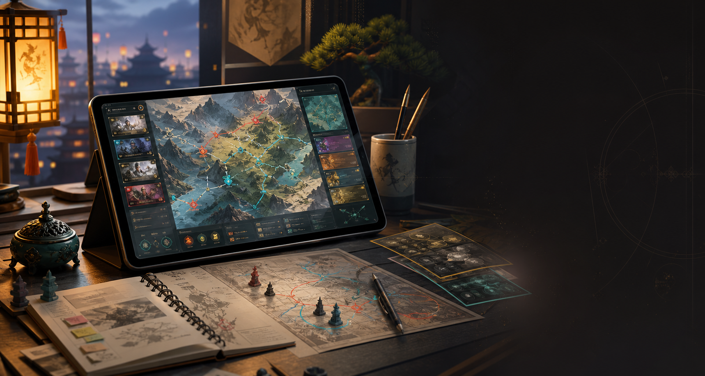

Single Game Guide · Original Notes
只做一款游戏，把开荒、队伍、职业、资源、同盟和赛季节奏拆清楚。本站不使用官方素材、Logo 或搬运文章，所有示例内容均为原创整理。
Guide Index
Latest Guides
没有匹配的攻略。
Topic Map
Guide Updates
本站专注《三国：谋定天下》非官方原创攻略，持续整理新手开荒、平民阵容、职业选择、资源规划和同盟赛季等内容。文章会按版本变化复查，结论仅供参考，请以游戏内实际情况为准。